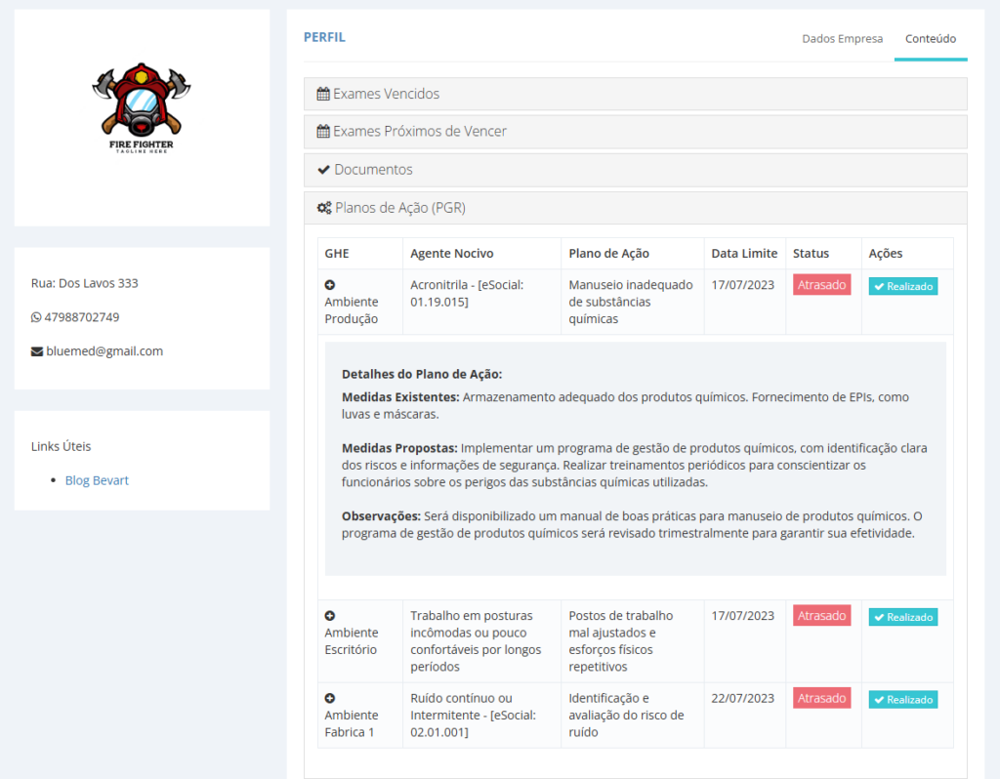
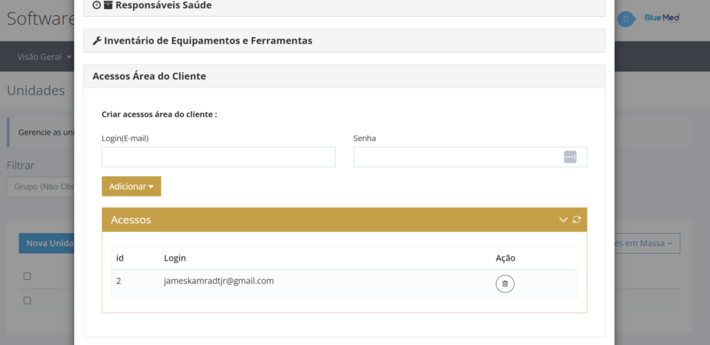
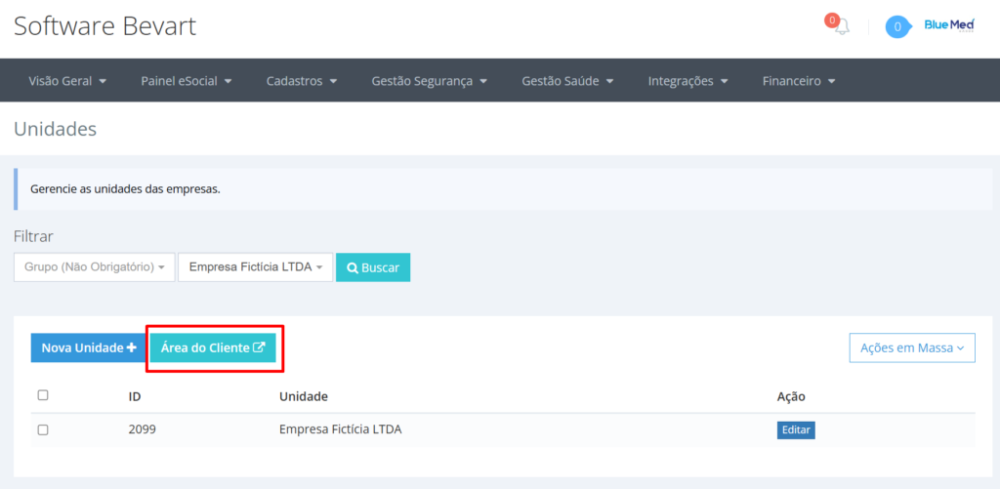

Área do cliente: o portal que a sua consultoria entrega
Em vez de mandar PDF por WhatsApp e responder "cadê o ASO?" toda semana, cada cliente entra com o próprio login e encontra documento assinado, exame a vencer e plano de ação.

O essencial em 30 segundos
- Cada unidade cadastrada pode ter logins próprios para o cliente acessar sua área.
- Lá dentro o cliente vê exames a vencer e vencidos, baixa documentos assinados digitalmente e acompanha os planos de ação que são responsabilidade dele.
- O acesso é criado em Unidade → Editar → Acessos Área do Cliente, e o link é o mesmo para toda a carteira.
Toda consultoria de SST conhece a rotina: o documento fica pronto, alguém envia por e-mail, o cliente perde, pede de novo, e três meses depois ninguém sabe qual foi a última versão. O tempo que isso consome não aparece em nenhum orçamento — mas aparece na agenda da equipe.
A área do cliente resolve esse ponto invertendo a lógica: em vez de a consultoria empurrar arquivo, o cliente puxa a informação quando precisa, sempre na versão atual.
O que o cliente encontra ao entrar

1. Exames a vencer e vencidos
A lista mostra a situação dos exames ocupacionais dos funcionários daquela unidade — o que já venceu e o que está para vencer. É a informação que mais gera ligação para a consultoria, e ela passa a estar disponível o tempo todo, sem intermediário.
2. Documentos atualizados e assinados
LTCAT, PCMSO, ASO e demais documentos ficam disponíveis para download já assinados digitalmente. Como o arquivo vem do próprio sistema que o gerou, some a dúvida sobre versão: não existe "a que o Fulano mandou em março".
3. Planos de ação
Cada cliente acompanha as medidas que precisam ser implantadas na empresa dele. Isso muda a conversa: o plano de ação deixa de ser um anexo do documento e vira uma lista de pendências com dono. Se quiser entender como essa lista nasce, veja como montar o PGR a partir do inventário de riscos.
4. PGR que reflete a empresa
Com o plano visível para quem executa, o PGR para de ser documento estático e passa a mostrar o que está pendente, o que foi feito e o que venceu — que é exatamente o que a fiscalização quer ver.
Entregue o portal junto com o serviço
A área do cliente é criada por unidade, sem custo por acesso, e usa os documentos que a sua operação já gera dentro do Bevart.
Criar conta grátisComo criar os acessos
- Vá no cadastro de Unidade e selecione a unidade do cliente.
- Clique em Editar.
- Abra Acessos Área do Cliente.
- Crie o login e a senha de cada pessoa que vai acompanhar aquela unidade.

Como o cliente entra
O endereço de acesso fica no botão Área do Cliente. Esse link é o mesmo para toda a carteira — a consultoria compartilha uma vez, e cada cliente entra com o login dele.

Coloque o link da área do cliente na assinatura de e-mail da equipe e no rodapé da proposta comercial. Transparência de documento é argumento de venda — e reduz a quantidade de pedidos avulsos que a sua equipe atende por semana.
O ganho real para a consultoria
- Menos interrupção: pedidos de segunda via saem da fila da equipe.
- Menos risco: o cliente não circula versão antiga de documento.
- Mais percepção de valor: o cliente vê o trabalho acontecendo, não só a fatura.
- Cobrança compartilhada: exame a vencer aparece para quem precisa liberar o funcionário.
Perguntas frequentes
O cliente enxerga dados de outras empresas?
Não. O acesso é criado dentro do cadastro de cada unidade, e o login só abre a operação daquela unidade. O link de entrada é comum, mas o conteúdo é isolado por credencial.
Posso criar mais de um login para o mesmo cliente?
Sim. É comum ter um acesso para o RH e outro para a segurança do trabalho da empresa cliente, cada um com a própria credencial.
Os documentos baixados são válidos?
Os arquivos disponibilizados são os mesmos gerados e assinados digitalmente dentro do sistema, com a assinatura que comprova autenticidade e integridade do conteúdo.
Preciso treinar o cliente para usar?
A área mostra poucas coisas de propósito: documentos, situação de exames e planos de ação. Na prática, o envio do link com uma frase explicando o que ele encontra ali costuma bastar.